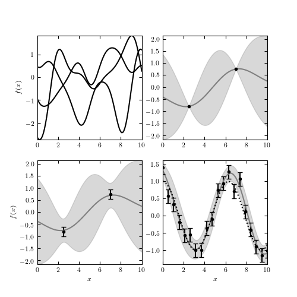

Gaussian Process Example¶
Figure 8.10
An example of Gaussian process regression. The upper-left panel shows three functions drawn from an unconstrained Gaussian process with squared-exponential covari- ance of bandwidth h = 1.0. The upper-right panel adds two constraints, and shows the 2-sigma contours of the constrained function space. The lower-left panel shows the function space constrained by the points with error bars. The lower-right panel shows the function space constrained by 20 noisy points drawn from f(x) = cos(x).
{kind=link}
best-fit theta = 0.5069334228896024
# Author: Jake VanderPlas
# License: BSD
# The figure produced by this code is published in the textbook
# "Statistics, Data Mining, and Machine Learning in Astronomy" (2013)
# For more information, see http://astroML.github.com
# To report a bug or issue, use the following forum:
# https://groups.google.com/forum/#!forum/astroml-general
from __future__ import print_function, division
import numpy as np
from matplotlib import pyplot as plt
from sklearn.gaussian_process import GaussianProcessRegressor, kernels
from scipy.optimize import fmin_cobyla
#----------------------------------------------------------------------
# This function adjusts matplotlib settings for a uniform feel in the textbook.
# Note that with usetex=True, fonts are rendered with LaTeX. This may
# result in an error if LaTeX is not installed on your system. In that case,
# you can set usetex to False.
if "setup_text_plots" not in globals():
from astroML.plotting import setup_text_plots
setup_text_plots(fontsize=8, usetex=True)
#------------------------------------------------------------
# define a squared exponential covariance function
def squared_exponential(x1, x2, h):
return np.exp(-0.5 * (x1 - x2) ** 2 / h ** 2)
#------------------------------------------------------------
# draw samples from the unconstrained covariance
np.random.seed(1)
x = np.linspace(0, 10, 100)
h = 1.0
mu = np.zeros(len(x))
C = squared_exponential(x, x[:, None], h)
draws = np.random.multivariate_normal(mu, C, 3)
#------------------------------------------------------------
# Constrain the mean and covariance with two points
x1 = np.array([2.5, 7])
y1 = np.cos(x1)
kernel1 = kernels.RBF(1/0.5, (1/0.5, 1/0.5))
gp1 = GaussianProcessRegressor(kernel=kernel1, random_state=0, normalize_y=True)
gp1.fit(x1[:, None], y1)
f1, f1_err = gp1.predict(x[:, None], return_std=True)
#------------------------------------------------------------
# Constrain the mean and covariance with two noisy points
# scikit-learn gaussian process uses nomenclature from the geophysics
# community, where a "nugget (alpha parameter)" can be specified.
# The diagonal of the assumed covariance matrix is multiplied by the nugget.
# This is how the error on inputs is incorporated into the calculation.
dy2 = 0.2
kernel2 = kernels.RBF(1/0.5, (1/0.5, 1/0.5))
gp2 = GaussianProcessRegressor(kernel=kernel2,
alpha=(dy2 / y1) ** 2, random_state=0)
gp2.fit(x1[:, None], y1)
f2, f2_err = gp2.predict(x[:, None], return_std=True)
#------------------------------------------------------------
# Constrain the mean and covariance with many noisy points
x3 = np.linspace(0, 10, 20)
y3 = np.cos(x3)
dy3 = 0.2
y3 = np.random.normal(y3, dy3)
kernel3 = kernels.RBF(0.5, (0.01, 10.0))
gp3 = GaussianProcessRegressor(kernel=kernel3,
alpha=(dy3 / y3) ** 2, random_state=0)
gp3.fit(x3[:, None], y3)
f3, f3_err = gp3.predict(x[:, None], return_std=True)
# we have fit for the `h` parameter: print the result here:
print("best-fit theta =", gp3.kernel_.theta[0])
#------------------------------------------------------------
# Plot the diagrams
fig = plt.figure(figsize=(5, 5))
# first: plot a selection of unconstrained functions
ax = fig.add_subplot(221)
ax.plot(x, draws.T, '-k')
ax.set_ylabel('$f(x)$')
# second: plot a constrained function
ax = fig.add_subplot(222)
ax.plot(x, f1, '-', color='gray')
ax.fill_between(x, f1 - 2 * f1_err, f1 + 2 * f1_err, color='gray', alpha=0.3)
ax.plot(x1, y1, '.k', ms=6)
# third: plot a constrained function with errors
ax = fig.add_subplot(223)
ax.plot(x, f2, '-', color='gray')
ax.fill_between(x, f2 - 2 * f2_err, f2 + 2 * f2_err, color='gray', alpha=0.3)
ax.errorbar(x1, y1, dy2, fmt='.k', ms=6)
ax.set_xlabel('$x$')
ax.set_ylabel('$f(x)$')
# third: plot a more constrained function with errors
ax = fig.add_subplot(224)
ax.plot(x, f3, '-', color='gray')
ax.fill_between(x, f3 - 2 * f3_err, f3 + 2 * f3_err, color='gray', alpha=0.3)
ax.errorbar(x3, y3, dy3, fmt='.k', ms=6)
ax.plot(x, np.cos(x), ':k')
ax.set_xlabel('$x$')
for ax in fig.axes:
ax.set_xlim(0, 10)
plt.show()